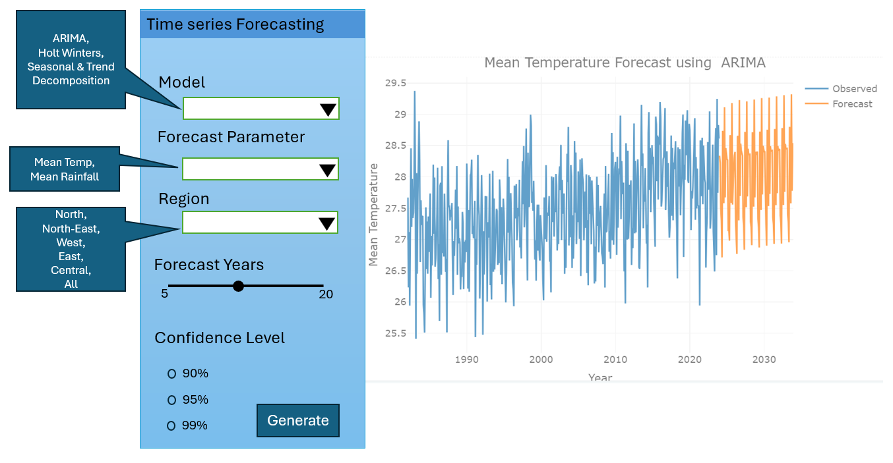
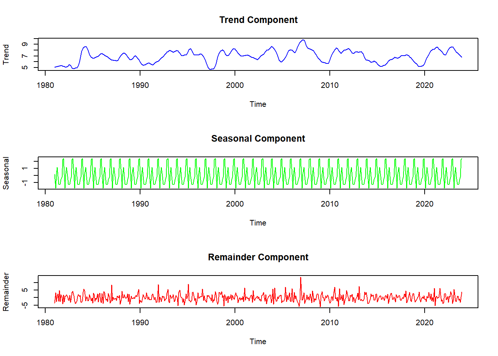

pacman::p_load(readr, tidyverse, plotly, ggplot2, zoo, forecast, janitor, fs)Take-home Exercise 4: Prototyping Modules for Shiny Application
1 Overview
In this take-home exercise, we are required to select one of the modules of our proposed Shiny application and complete the following tasks:
To evaluate and determine the necessary R packages needed for our Shiny application are supported in R CRAN
To prepare and test the specific R codes that can be run and return the correct output as expected
To determine the parameters and outputs that will be exposed on the Shiny applications
To select the appropriate Shiny UI components for exposing the parameters determined above.
1.1 Project Details
Our team has decided to work on visualising and analysing historical weather data from Meteorological Service Singapore. We will create a R Shiny app with user-friendly functionalities, to effectively visualize and analyze weather data.
The R Shiny app will consist of the following sections:
Homepage tab: Users have an overview of the dataset used. Users will be able to locate the weather stations in Singapore via a map of Singapore and some interactivity elements.
EDA tab: Users can explore the distribution and trends of the weather information for specific time periods or stations or regions.
CDA tab: Users can use statistical analysis to confirm the trends of the weather information.
Time series forecast tab: Users can explore the time series forecast of temperature or rainfall by selecting the type of forecasting model, the period to forecast etc that they would like to use for univariate time series forecasting.
This exercise will focus on the last section - time series forecast.
2. Data Preparation
2.1 Installing R packages
The code below uses p_load() of the Pacman package to check if all the required packages are installed on the laptop. If they are, then they will be launched into the R environment.
| Package | Description |
|---|---|
| tidyverse | A collection of core packages designed for data science used extensively for data preparation and wrangling. |
| lubridate | For manipulating date-times. |
| janitor | For quick formatting of data frame columns. |
| fs | For retrieving a list of file names in our directory for import into R |
| zoo | For irregular time series of numeric vectors/matrices and factors manipulation |
2.2 Importing data
Based on the MSS website, we can download the monthly data of a selected climate station each time. As such, I have written a robotic process automation bot using UIPath software to download all the monthly data and store them in the /data/weather folder. Let’s read all the 5552 CSV files downloaded for the 18 weather stations that have records from the year 1980 onwards.
localeargument inread_csv()is to specify the encoding as Latin-1, as some of the headers contain special characters, like the degree symbol (°). The Latin-1 encoding ensures R can read and process such special characters.col_typesargument imports all columns as character data type.clean_names()of the janitor package converts into snake case and transliterates special characters such as the degree symbol (°) to ASCII.
filenames <- fs::dir_ls("data/weather/")
# Read all files and clean the column names
data <- filenames %>%
map_df(~ read_csv(.x,
locale = locale(encoding = "latin1"),
col_types = cols(.default = "character")
) %>%
janitor::clean_names()
)
glimpse(data)
Note
All the 18 weather stations have a total of 168,439 records.
The data shows that there are two sets of variables for mean, maximum, and minimum temperature records:
mean_temperature_c, maximum_temperature_c, and minimum_temperature_c
mean_temperature_a_c, maximum_temperature_a_c, and minimum_temperature_a_c
This might happen during clean_names() where there is a minor difference in the column names from different files.
As the data is huge and it takes some time to load each file, let’s write into a RDS file and read it for easy use.
write_rds(data, "data/weather.rds")data <- read_rds("data/weather.rds")Let’s read the region data.
region <- read_csv("data/Region.csv")
glimpse(region)Rows: 18
Columns: 2
$ Station <chr> "Admiralty", "Ang Mo Kio", "Boon Lay (East)", "Changi", "Choa …
$ Region <chr> "North", "North-East", "West", "East", "West", "West", "East",…2.3 Data Wrangling
Let’s use coalesce() function to copy the values from the second set of temperature values to the first set and then deselect the second set of columns.
data$mean_temperature_c <- coalesce(data$mean_temperature_c,
data$mean_temperature_a_c)
data$maximum_temperature_c <- coalesce(data$maximum_temperature_c,
data$maximum_temperature_a_c)
data$minimum_temperature_c <- coalesce(data$minimum_temperature_c,
data$minimum_temperature_a_c)
data %>% select(-c(mean_temperature_a_c,
maximum_temperature_a_c,
minimum_temperature_a_c,
mean_wind_speed_km_h,
max_wind_speed_km_h))# A tibble: 168,439 × 11
station year month day daily_rainfall_total_mm highest_30_min_rainfal…¹
<chr> <chr> <chr> <chr> <chr> <chr>
1 Paya Lebar 1981 1 1 0 "\u0097"
2 Paya Lebar 1981 1 2 0.4 "\u0097"
3 Paya Lebar 1981 1 3 0 "\u0097"
4 Paya Lebar 1981 1 4 3.3 "\u0097"
5 Paya Lebar 1981 1 5 0 "\u0097"
6 Paya Lebar 1981 1 6 0.8 "\u0097"
7 Paya Lebar 1981 1 7 4.6 "\u0097"
8 Paya Lebar 1981 1 8 2.3 "\u0097"
9 Paya Lebar 1981 1 9 0.3 "\u0097"
10 Paya Lebar 1981 1 10 0 "\u0097"
# ℹ 168,429 more rows
# ℹ abbreviated name: ¹highest_30_min_rainfall_mm
# ℹ 5 more variables: highest_60_min_rainfall_mm <chr>,
# highest_120_min_rainfall_mm <chr>, mean_temperature_c <chr>,
# maximum_temperature_c <chr>, minimum_temperature_c <chr>glimpse(data)Rows: 168,439
Columns: 16
$ station <chr> "Paya Lebar", "Paya Lebar", "Paya Lebar", …
$ year <chr> "1981", "1981", "1981", "1981", "1981", "1…
$ month <chr> "1", "1", "1", "1", "1", "1", "1", "1", "1…
$ day <chr> "1", "2", "3", "4", "5", "6", "7", "8", "9…
$ daily_rainfall_total_mm <chr> "0", "0.4", "0", "3.3", "0", "0.8", "4.6",…
$ highest_30_min_rainfall_mm <chr> "\u0097", "\u0097", "\u0097", "\u0097", "\…
$ highest_60_min_rainfall_mm <chr> "\u0097", "\u0097", "\u0097", "\u0097", "\…
$ highest_120_min_rainfall_mm <chr> "\u0097", "\u0097", "\u0097", "\u0097", "\…
$ mean_temperature_c <chr> "\u0097", "\u0097", "\u0097", "\u0097", "\…
$ maximum_temperature_c <chr> "30.8", "29.5", "30.4", "30.7", "27.2", "3…
$ minimum_temperature_c <chr> "22.7", "23.1", "23.5", "23.5", "23.2", "2…
$ mean_wind_speed_km_h <chr> "14.3", "9.4", "11.7", "9.4", "9.1", "9.6"…
$ max_wind_speed_km_h <chr> "\u0097", "\u0097", "\u0097", "\u0097", "\…
$ mean_temperature_a_c <chr> NA, NA, NA, NA, NA, NA, NA, NA, NA, NA, NA…
$ maximum_temperature_a_c <chr> NA, NA, NA, NA, NA, NA, NA, NA, NA, NA, NA…
$ minimum_temperature_a_c <chr> NA, NA, NA, NA, NA, NA, NA, NA, NA, NA, NA…Remove weird characters
There are some weird characters in the data frame. Let’s replace them with NA.
data <- data %>%
mutate_all(~ ifelse(. == "\u0097", NA, .))Tidy up the weather data
Finally, let’s clean up the weather data and create a column for date, change the necessary columns to numeric, and shorten the column names for simplicity.
weather <- data %>%
mutate(station = station,
DDate = make_date(year = year, month = month, day = day),
year = as.numeric(year),
month = lubridate::month(DDate, label = TRUE),
day = as.numeric(day),
daily_rainfall_total_mm = as.numeric(daily_rainfall_total_mm),
highest_30_min_rainfall_mm = as.numeric(highest_30_min_rainfall_mm),
highest_60_min_rainfall_mm = as.numeric(highest_60_min_rainfall_mm),
highest_120_min_rainfall_mm = as.numeric(highest_120_min_rainfall_mm),
mean_temperature_c = as.numeric(mean_temperature_c),
maximum_temperature_c = as.numeric(maximum_temperature_c),
minimum_temperature_c = as.numeric(minimum_temperature_c)) %>%
rename(
Station = station,
Year = year,
Month = month,
Day = day,
Rainfall = daily_rainfall_total_mm,
Rainfall30 = highest_30_min_rainfall_mm,
Rainfall60 = highest_60_min_rainfall_mm,
Rainfall120 = highest_120_min_rainfall_mm,
MeanTemp = mean_temperature_c,
MaxTemp = maximum_temperature_c,
MinTemp = minimum_temperature_c
) %>%
subset(select = -c(mean_temperature_a_c,
maximum_temperature_a_c,
minimum_temperature_a_c,
mean_wind_speed_km_h,
max_wind_speed_km_h))2.4 Merge datasets
weather <- merge(weather, region, by= "Station")
glimpse(weather)Rows: 147,833
Columns: 13
$ Station <chr> "Admiralty", "Admiralty", "Admiralty", "Admiralty", "Admir…
$ Year <dbl> 2011, 2011, 2011, 2011, 2011, 2011, 2011, 2011, 2011, 2011…
$ Month <ord> Jan, Jan, Feb, Feb, Feb, Feb, Feb, Feb, Mar, Feb, Feb, Feb…
$ Day <dbl> 13, 14, 13, 8, 9, 10, 11, 12, 25, 14, 15, 16, 17, 18, 19, …
$ Rainfall <dbl> 0.0, 11.4, 0.0, 20.0, 0.0, 38.0, 14.8, 1.6, 0.0, 0.0, 9.0,…
$ Rainfall30 <dbl> NA, NA, NA, NA, NA, NA, NA, NA, NA, NA, NA, NA, NA, NA, NA…
$ Rainfall60 <dbl> NA, NA, NA, NA, NA, NA, NA, NA, NA, NA, NA, NA, NA, NA, NA…
$ Rainfall120 <dbl> NA, NA, NA, NA, NA, NA, NA, NA, NA, NA, NA, NA, NA, NA, NA…
$ MeanTemp <dbl> 26.7, 25.5, 27.2, 26.8, 26.9, 26.8, 26.6, 27.0, 28.7, 27.2…
$ MaxTemp <dbl> 29.8, 29.4, 32.2, 33.1, 32.1, 34.6, 33.4, 33.5, 31.8, 32.3…
$ MinTemp <dbl> 24.2, 24.0, 24.5, 23.5, 24.2, 22.3, 23.8, 24.3, 25.7, 24.6…
$ DDate <date> 2011-01-13, 2011-01-14, 2011-02-13, 2011-02-08, 2011-02-0…
$ Region <chr> "North", "North", "North", "North", "North", "North", "Nor…2.5 Create subsets of data
Let’s create subsets of weather data for only Temperature or Rainfall variables.
Each Temperature or Rainfall variable has 2 subsets - one with region grouping, one without region grouping.
weather$DDate <- as.Date(paste(weather$Year,
weather$Month,
1, sep = "-"), format = "%Y-%b-%d")
Temp_YM <- weather %>%
group_by(Year, Month, Region) %>%
reframe(DDate = DDate,
AveMeanTemp = mean(MeanTemp, na.rm = TRUE),
MaxMaxTemp = max(MaxTemp, na.rm = TRUE),
MinMinTemp = min(MinTemp, na.rm = TRUE)) %>%
distinct() %>%
ungroup() %>%
filter(!is.na(AveMeanTemp))
Temp_YM_allR <- weather %>%
group_by(Year, Month) %>%
reframe(DDate = DDate,
AveMeanTemp = mean(MeanTemp, na.rm = TRUE),
MaxMaxTemp = max(MaxTemp, na.rm = TRUE),
MinMinTemp = min(MinTemp, na.rm = TRUE)) %>%
distinct() %>%
ungroup() %>%
filter(!is.na(AveMeanTemp))
Rain_YM <- weather %>%
group_by(Region, Year, Month) %>%
reframe(DDate = DDate,
MeanRainfall = mean(Rainfall, na.rm = TRUE),
HighRainfall30 = mean(Rainfall30, na.rm = TRUE),
HighRainfall60 = mean(Rainfall60, na.rm = TRUE),
HighRainfall120 = mean(Rainfall120, na.rm = TRUE)) %>%
distinct() %>%
ungroup() %>%
filter(!is.na(MeanRainfall))
Rain_YM_allR <- weather %>%
group_by(Year, Month) %>%
reframe(DDate = DDate,
MeanRainfall = mean(Rainfall, na.rm = TRUE),
HighRainfall30 = mean(Rainfall30, na.rm = TRUE),
HighRainfall60 = mean(Rainfall60, na.rm = TRUE),
HighRainfall120 = mean(Rainfall120, na.rm = TRUE)) %>%
distinct() %>%
ungroup() %>%
filter(!is.na(MeanRainfall))3 UI Design
I will be working on the forecasting of temperature and rainfall (univariate) for the next few years.
From the above design, users are able to make the following selection:
Choose the forecasting model (ARIMA, Holt-Winters or Seasonal & Trend Decomposition)
Choose the forecast Parameter (temperature or rainfall)
Choose the region (North, North-East, West, East, Central or All)
Choose the number of years to forecast (range from 5 to 20 years)
Choose the confidence level of the forecast (90%, 95% or 99%)
Once the users click on the “Generate” button, the forecast plot will be shown on the right. Users can mouse over the data points to look at the forecast values.
4 Prototype
4.1 Create a function
This function will take in all the five parameters that users set, generate the forecasting values and plot the graph using plotly().
For the Seasonal & Trend Decomposition method, there are 3 additional plots to show (trend, seasonal and residual).
GenerateTS <- function(variable_name, model_name, select_region,
forecast_year, conf_level) {
if (variable_name == "Temp") {
if (select_region != "All") {
temp <- Temp_YM %>%
filter(Region == select_region)
}
else {
temp <- Temp_YM_allR
}
ts_data <- ts(temp$AveMeanTemp,
start = c(min(temp$Year),1),
end = c(max(temp$Year),12), frequency = 12)
minDate = min(temp$DDate)
displayText = "Temp"
displayUnit = "°C"
}
else {
if (select_region != "All") {
temp <- Rain_YM %>%
filter(Region == select_region)
}
else {
temp <- Rain_YM_allR
}
ts_data <- ts(temp$MeanRainfall,
start = c(min(temp$Year),1),
end = c(max(temp$Year),12), frequency = 12)
minDate = min(temp$DDate)
displayText = "Rainfall"
displayUnit = "mm"
}
switch(model_name,
"ARIMA" = { model = auto.arima(ts_data, p = 5, seasonal = TRUE)},
"HoltWinters" = { model <- HoltWinters(ts_data)},
"STL" = {model <- stl(ts_data, s.window="periodic") }
)
forecast_values <- forecast(model, h = forecast_year * 12,
level = c(conf_level))
accuracy_metrics <- accuracy(forecast_values)
actual_values <- ts_data[(length(ts_data) -
length(forecast_values$mean) + 1):length(ts_data)]
forecast_df <- data.frame(Date = time(forecast_values$mean),
Forecast = forecast_values$mean,
LowerV = forecast_values$lower,
UpperV = forecast_values$upper)
forecast_df$YearMonth <- format(as.Date(forecast_df$Date,
origin = minDate), "%Y-%m")
LowerV <- paste("X", as.character(conf_level), ".", sep = "")
HigherV <- paste("X", as.character(conf_level), "..1", sep = "")
names(forecast_df)[names(forecast_df) == HigherV] <- "UpperV"
names(forecast_df)[names(forecast_df) == LowerV] <- "LowerV"
#cannot go negative
forecast_df$LowerV <- pmax(forecast_df$LowerV, 0)
actual_df <- data.frame(Date = time(ts_data), Actual = ts_data)
actual_df$YearMonth <- format(as.Date(actual_df$Date,
origin = minDate), "%Y-%m")
g <- plot_ly() %>%
add_lines(data = forecast_df, x = ~Date, y = ~Forecast,
name = "Forecast", line = list(color = 'blue'),
hoverinfo = "text",
text = ~paste("Year-Month: ", YearMonth,
"<br>", displayText, ": ",
round(Forecast,2), displayUnit))%>%
add_lines(data = actual_df, x = ~Date, y = ~Actual,
name = "Actual", line = list(color = 'red'),
hoverinfo = "text",
text = ~paste("Year-Month: ", YearMonth,
"<br>", displayText, ": ",
round(Actual,2), displayUnit)) %>%
add_ribbons(data = forecast_df, x = ~Date,
ymin = ~LowerV, ymax = ~UpperV,
name = paste(conf_level, "% CI"),
fillcolor = 'lightblue',
opacity = 0.5,
hoverinfo = "text",
text = ~paste("Year-Month: ", YearMonth,
"<br>CI:", round(LowerV,2), displayUnit,
"-", round(UpperV,2), displayUnit)) %>%
layout(title = paste("Forecasting for the next ", forecast_year,
" years using ", model_name),
xaxis = list(title = "Year"),
yaxis = list(title = "Value"))
if (model_name == "STL") {
par(mfrow=c(3, 1)) # Set up a 3x1 layout for plots
trend <- model$time.series[, "trend"]
seasonal <- model$time.series[, "seasonal"]
remainder <- model$time.series[, "remainder"]
# Plot trend component
plot(time(ts_data), trend, type="l", col="blue",
main="Trend Component", xlab="Time", ylab="Trend")
# Plot seasonal component
plot(time(ts_data), seasonal, type="l", col="green",
main="Seasonal Component", xlab="Time", ylab="Seasonal")
# Plot remainder (residual) component
plot(time(ts_data), remainder, type="l", col="red",
main="Remainder Component", xlab="Time", ylab="Remainder")
# Reset par to default settings
par(mfrow=c(1, 1))
}
g
}
Note
As the forecast lower bound values may go negative, we would need to limit them to minimum 0 value as we do not have negative temperature or rainfall in Singapore.
4.2 Test the function
Let’s test the function with various parameters:
Forecast temperature using the ARIMA method for North region data over the next 10 years with a 95% confidence interval.
GenerateTS("Temp", "ARIMA", "North", 10, 95)Forecast temperature using the Holt-Winters method for East region data over the next 5 years with a 99% confidence interval.
GenerateTS("Temp", "HoltWinters", "East", 5, 99)Forecast rainfall using the STL method for all region data over the next 5 years with a 90% confidence interval.
GenerateTS("Rain", "STL", "All", 5, 90)
Time series clustering | Data Analysis (geomoer.github.io)
library(prophet)
# Create a dataframe for Prophet
actual_df <- data.frame(ds = Temp_YM_allR$DDate, y = Temp_YM_allR$AveMeanTemp)
# Fit the Prophet model
model <- prophet(interval.width = 0.95)
model <- fit.prophet(model, actual_df)
# Make future predictions
future <- make_future_dataframe(model, periods = 10*12, freq = 'months')
forecast_values <- predict(model, future)
str(forecast_values)
forecast_df <- data.frame(
Date = forecast_values$ds, # Timestamps
Forecast = forecast_values$yhat, # Forecasted values
LowerV = forecast_values$yhat_lower, # Lower bounds of forecasts
UpperV = forecast_values$yhat_upper # Upper bounds of forecasts
)
# Optionally, you can convert 'Date' column to Date type
forecast_df$Date <- as.Date(forecast_df$Date)
forecast_df$YearMonth <- format(as.Date(forecast_df$Date,
origin = minDate), "%Y-%m")
#cannot go negative
forecast_df$LowerV <- pmax(forecast_df$LowerV, 0)
plot_ly() %>%
add_lines(data = forecast_df, x = ~Date, y = ~Forecast, name = 'Forecast', line = list(color = 'blue')) %>%
add_lines(data = forecast_df, x = ~Date, y = ~LowerV, name = 'Lower Bound', line = list(color = 'red', dash = 'dot')) %>%
add_lines(data = forecast_df, x = ~Date, y = ~UpperV, name = 'Upper Bound', line = list(color = 'green', dash = 'dot')) %>%
add_trace(data = actual_df, x = ~Date, y = ~y, name = 'Actual', type = 'scatter', mode = 'lines', line = list(color = 'black')) %>%
layout(title = 'Temperature Forecast',
xaxis = list(title = 'Date'),
yaxis = list(title = 'Temperature'))